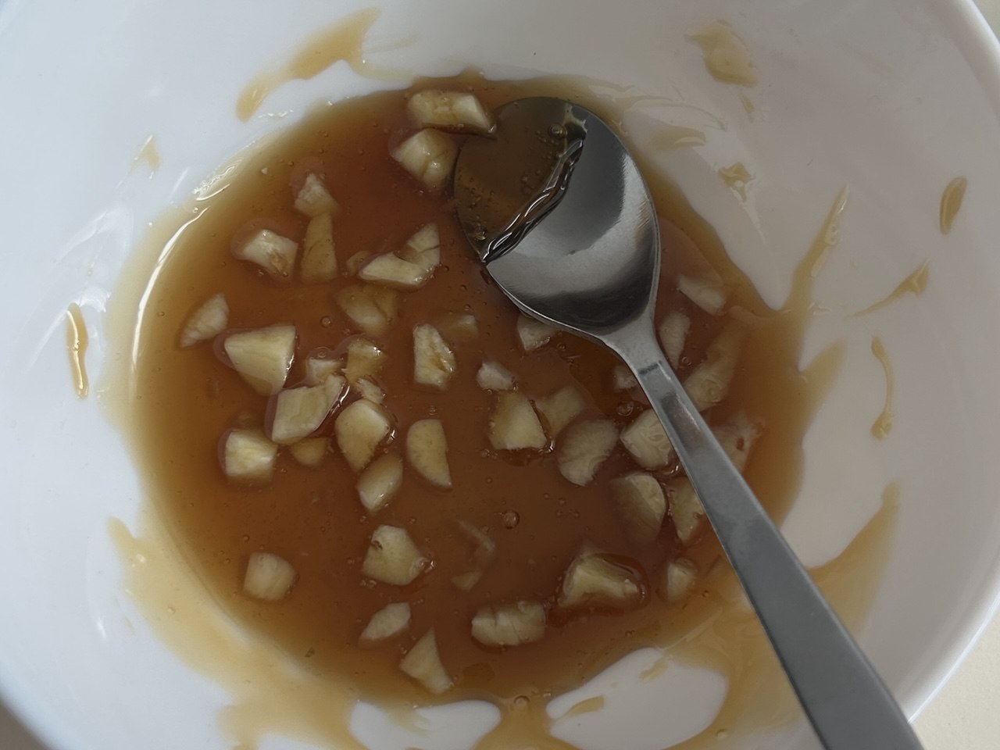
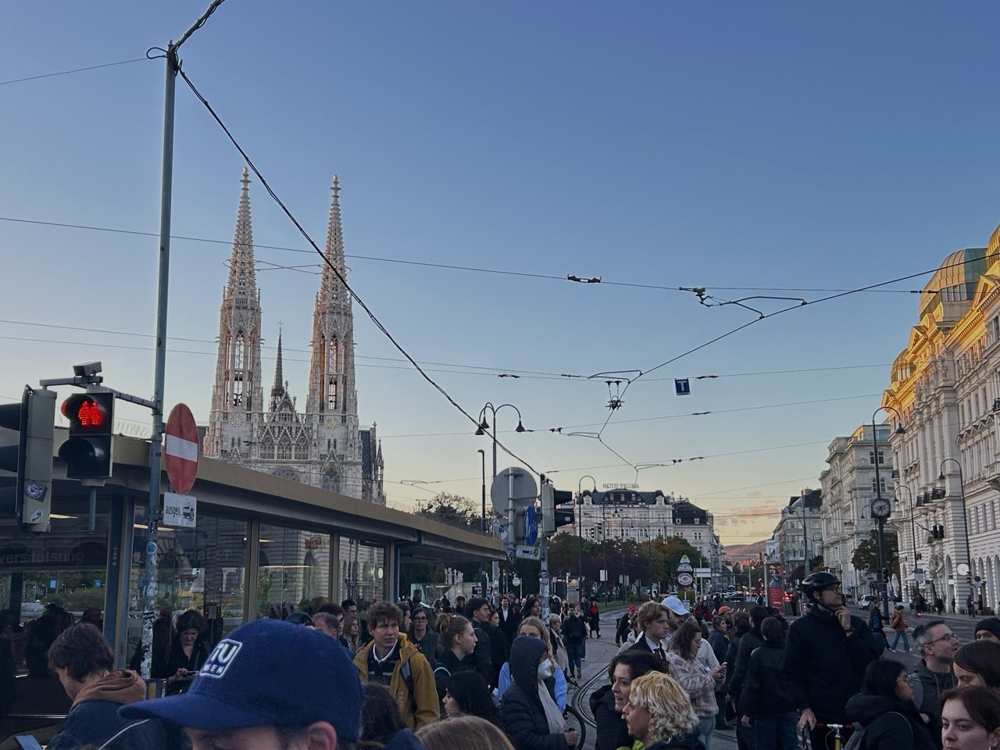

the sky on the road from ferrara to casalecchio di reno, almost apocalyptic in its beauty. we took an exit and the drop for roman holiday hit exactly as the light changed. couldn't have asked for a better pre-concert welcome.
Oct 26, 2026
fontaines d.c. at the unipol arena. a truly truly truly magical night.
Oct 26, 2026

the desperation of trying any known remedy to a ill-timed cold (or, raw garlic and honey, colorized)
Oct 23, 2026

protest against cuts in research. ended on a lovely light, caught a lot of wind, was surprised to see that austrians use italian chants when they protest (siamo tutti antifascisti!)